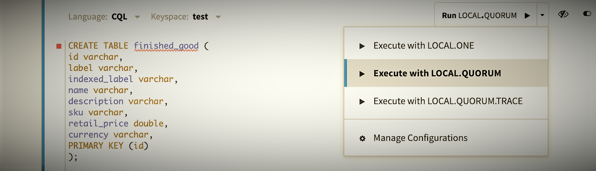

CQL-Starter
Author: Jeff Banks (DataStax)
Introduction
Welcome to the NoSQLBench Quick Byte, the first session in a “Getting Started” series for NoSQLBench. This session introduces a new Cassandra Query Language (CQL) starter workload now available in version 5 of NoSQLBench.
- If you haven't heard of NoSQLBench, checkout our introduction material
- If you already have a foundation with NoSQLBench and would like to understand what's included in the most recent version, checkout the release notes.
This session illustrates use of CQL, using NoSQLBench v5, along with a Docker deployment of Apache Cassandra 4.1 using its latest image.
Let’s get rolling …
Setup
This session was tested with:
- Ubuntu (v20.4)
- Docker (v20.10.18)
- NoSQLBench (v5.17.2)
- Apache Cassandra (v4.1)
Install Docker
Ensure Docker is installed on your operating system. You can download it from here
Get NB5
Obtain official NB5 release, if you don't already have it, from
latest nb5 release,
and then chmod +x nb5.
See get nosqlbench for other download options.
You should be able to see your version installed using:
./nb5 --version
Run Cassandra
Run the latest Cassandra 4.* docker.
docker run --name cass4 -p 9042:9042 -d cassandra
If you have issues, more details can be found at Apache Cassandra on docker hub.
Verify Cassandra is started from logs:
docker container logs cass4
Running the scenario
Now, we are ready to run the cql-starter NoSQLBench scenario.
Locate NB5
Navigate via your local command line to where the nb5 binary was previously downloaded.
Verify
Ensure that issuing the following command identifies the workload used for this session.
./nb5 --list-workloads | grep cql-starter
Example output:
/activities/baselines/cql-starter.yaml
Optional step
An alternative is to copy the workload configuration listed below to your own local file in a folder of your choosing. You can name it whatever you like, as you will specify the absolute file path directly when issuing the scenario command.
CQL workload template
This YAML file is designed as a basic foundation for continuing to learn NoSQLBench capabilities as well as a starting point for customizing for your own testing needs.
You will notice that the number of cycles are minimal to support local testing to ensure that your configuration is constructed properly. When customizing these for real-world tests, the values can be set to millions or more! That is where the full power of NoSQLBench shines to generate critical metrics for analysis to make a system more robust.
description: >2
A cql-starter workload.
* Cassandra: 3.x, 4.x.
* DataStax Enterprise: 6.8.x.
* DataStax Astra.
scenarios:
default:
schema: run driver=cql tags==block:schema threads==1 cycles==UNDEF
rampup: run driver=cql tags==block:rampup cycles===TEMPLATE(rampup-cycles,1) threads=auto
main: run driver=cql tags==block:"main.*" cycles===TEMPLATE(main-cycles,10) threads=auto
# rampdown: run driver=cql tags==block:rampdown threads==1 cycles==UNDEF
astra:
schema: run driver=cql tags==block:schema-astra threads==1 cycles==UNDEF
rampup: run driver=cql tags==block:rampup cycles===TEMPLATE(rampup-cycles,10) threads=auto
main: run driver=cql tags==block:"main.*" cycles===TEMPLATE(main-cycles,10) threads=auto
params:
a_param: "value"
bindings:
machine_id: ElapsedNanoTime(); ToHashedUUID() -> java.util.UUID
message: Discard(); TextOfFile('data/cql-starter-message.txt');
rampup_message: ToString();
time: ElapsedNanoTime(); Mul(1000); ToJavaInstant();
ts: ElapsedNanoTime(); Mul(1000);
blocks:
schema:
params:
prepared: false
ops:
create-keyspace: |
create keyspace if not exists <<keyspace:starter>>
WITH replication = {'class': 'SimpleStrategy', 'replication_factor': '<<rf:1>>'}
AND durable_writes = true;
create-table: |
create table if not exists <<keyspace:starter>>.<<table:cqlstarter>> (
machine_id UUID,
message text,
time timestamp,
PRIMARY KEY ((machine_id), time)
) WITH CLUSTERING ORDER BY (time DESC);
schema-astra:
params:
prepared: false
ops:
create-table-astra: |
create table if not exists <<keyspace:starter>>.<<table:cqlstarter>> (
machine_id UUID,
message text,
time timestamp,
PRIMARY KEY ((machine_id), time)
) WITH CLUSTERING ORDER BY (time DESC);
rampup:
params:
cl: <<write_cl:LOCAL_QUORUM>>
idempotent: true
ops:
insert-rampup: |
insert into <<keyspace:starter>>.<<table:cqlstarter>> (machine_id, message, time)
values ({machine_id}, {rampup_message}, {time}) using timestamp {ts};
rampdown:
ops:
truncate-table: |
truncate table <<keyspace:starter>>.<<table:cqlstarter>>;
main-read:
params:
ratio: <<read_ratio:1>>
cl: <<read_cl:LOCAL_QUORUM>>
ops:
select-read: |
select * from <<keyspace:starter>>.<<table:cqlstarter>>
where machine_id={machine_id};
main-write:
params:
ratio: <<write_ratio:9>>
cl: <<write_cl:LOCAL_QUORUM>>
idempotent: true
ops:
insert-main: |
insert into <<keyspace:starter>>.<<table:cqlstarter>>
(machine_id, message, time) values ({machine_id}, {message}, {time}) using timestamp {ts};
Before running NoSQLBench scenario, let’s take a look at the layout of the file. Most of this will be the same layout structure used in all NB5 workload files so this helps to reveal a large amount of the basics. This is called a workload template.
Starting from the top of the workload template, the primary sections include:
- Description - A way to describe what the workload does.
- Scenarios - A set of named scenarios for detailing the intent of the workload and defines that for various blocks (e.g. schema, rampup, main, etc.).
- Params - Optional parameters of interest to reference for applying values.
- Bindings - Named recipes for generated data. These are referenced in block operations.
- Blocks - Where the labeled operations reside (e.g. schema, rampup, and main).
- Schema - A block section where the schema is actually defined and created.
- Rampup - A block section for data setup that becomes the backdrop for testing; it’s the density of data outside the metrics collected in the main block.
- Main - A block section that is the target of metrics collection activities.
This may look overwhelming at first glance, but the magic of what can be done for load testing target resources becomes more apparent as settings are tweaked for various test cases.
Basic Operations
The workload operations in the cql-starter are quite basic, and this is on purpose. The intent is to focus on a simple set of read and write operations to understand how to work with NoSQLBench and Cassandra using basic, direct CQL.
Table and Keyspace
For the default scenario workload, a simple table named ‘cqlstarter’ will be created with a keyspace named ‘starter’. There will be three fields for our table:
- machine_id
- message
- time
The machine_id is a unique identifier type, the message field is a text type, and the time is a timestamp type.
Since the example is designed to be run locally, the Cassandra keyspace replication is defined using a SimpleStrategy with a replication factor of one.
WITH replication = {'class': 'SimpleStrategy', 'replication_factor': '<<rf:1>>'}
Default scenario
For this session, the ‘default’ scenario is being used.
scenarios:
default:
schema: run driver=cql tags==block:schema …
rampup: run driver=cql tags==block:rampup …
main: run driver=cql tags==block:"main.*" …
One may notice there is an ‘astra’ scenario included in the file with its own set of activities
defined (e.g. -astra). References to astra are simply there to show how additional
scenarios can be defined in a single workload file.
astra:
schema: run driver=cql tags==block:schema-astra threads==1 cycles==UNDEF
This illustrates how flexible and customizable the workload file can become. The words are customizable and can be tailored for understanding the test case for any business or technical domain.
Bindings
Values for our three fields during insert, will come from the bindings section of the file.
Basic examples are included in the cql-starter, but this illustrates how bindings supply
values to be used by operations. Again, these are basic, just to illustrate how binding
functions can be utilized.
bindings:
machine_id: ElapsedNanoTime(); ToHashedUUID() -> java.util.UUID
message: Discard(); TextOfFile('data/cql-starter-message.txt');
rampup_message: ToString();
time: ElapsedNanoTime(); Mul(1000); ToJavaInstant();
ts: ElapsedNanoTime(); Mul(1000);
Notice how we can reference text from a file to be used for our message value. Nothing fancy, but illustrates how tests can leverage external information from files for decoupling input from the workload file itself. Think of this for things like secret token references, etc. that need to be referenced.
Discard(); TextOfFile('data/cql-starter-message.txt')
Note: The Discard() function is used to indicate a no-op as the initial message value. This
may change in the future, but for now it is a necessity due to the nature of bindings
defaulting to Long values. This is why the rampup_message was included for illustration as it uses a
ToString(); function assigning a string value. By default, the binding's value is 0L.
Hands on
Let’s run the cql-starter.
Running
Using the nb5 binary, issue the following command
./nb5 activities/baselines/cql-starter.yaml default hosts=localhost localdc=datacenter1
This command identifies that the default scenario workload is used with the key-value args passed along for use by the cqld4 adapter.
Examine the results
After the workload has been run, let’s take a look at the results from Cassandra itself using cqlsh.
docker container exec -it cass4 sh
cqlsh
select * from starter.cqlstarter;
You should see the single rampup entry along main operation entries in the Cassandra table.
Customize
Now, let’s customize the cql-starter to make it a bit more your own.
Save the .yaml file to your local environment.
One easy way, is to utilize the nb5 --copy command.
./nb5 --copy cql-starter
This provides a fresh workload file for you for cql-starter.
Edit the file and uncomment under the default scenario the following entry:
# rampdown: run driver=cql tags==block:rampdown threads==1 cycles==UNDEF
When you want to customize the cql-starter, you can simply target the file outside the NB5 distribution using:
./nb5 adapter-cqld4/<rel-path-to-customized-file>.yaml default hosts=localhost localdc=datacenter1
Also, if you would like to see more details in the output, add (-v, -vv, or -vvv) to the command.
./nb5 adapter-cqld4/<rel-path-to-customized-file>.yaml default hosts=localhost localdc=datacenter1 -v
When the workload is run after uncommenting the rampdown, selecting the content again using cqlsh, returns a table that has been truncated.
Next Steps
Checkout the NoSQLBench getting started section and details for its capabilities for your next testing initiative. This includes a number of built-in workloads that you can start from for more advanced scenarios.
Want to contribute?
It’s worth mentioning, NoSQLBench is open source and we are looking for contributions to expand its features! Head on over to the contributions page to find out more.
We will continue to have more Quick Bytes for NoSQLBench in the near future.
Stay tuned, and thank you for reading!